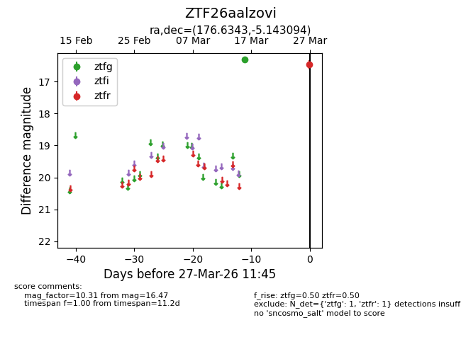
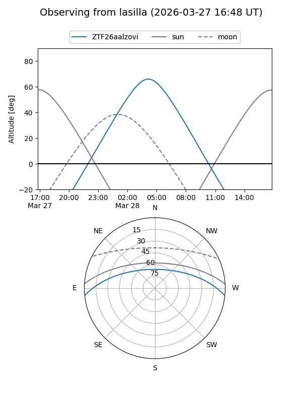
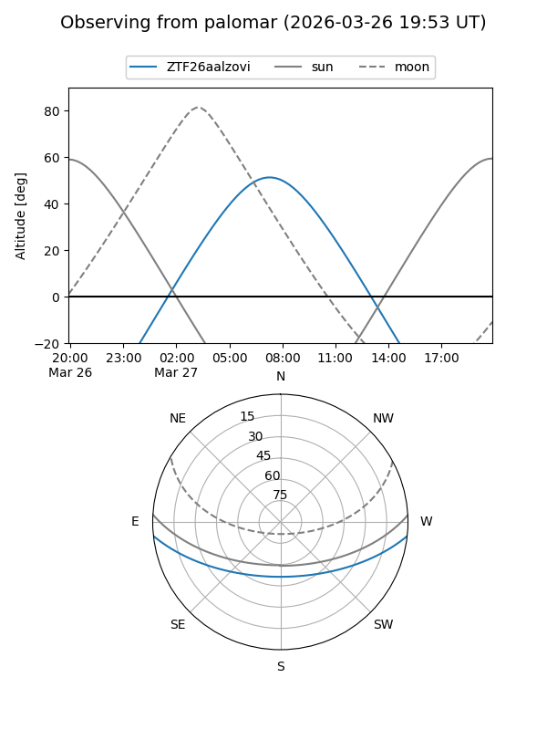

ZTF26aalzovi
Target ZTF26aalzovi at 2026-03-27 11:48
Aliases and brokers:
FINK: link
Lasair: link
ALeRCE: link
alt names
ZTF26aalzovi (ztf,fink_ztf)
Coordinates:
equatorial (ra, dec) = 176.6343,-5.14309
equatorial (HMS+DMS) = 11:46:32.23,-05:08:35.14
galactic (l, b) = (274.5858,+54.11786)
Flags:
Photometry:
last ztfg=16.31, ztfr=16.47
1 ztfg, 1 ztfr detections
Lightcurve

Visibility


Additional plots